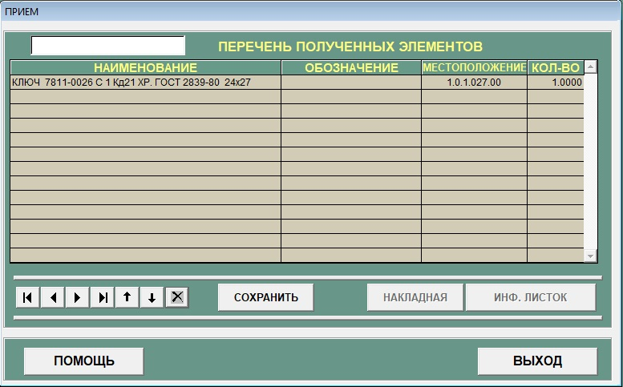
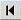
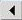
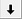
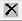
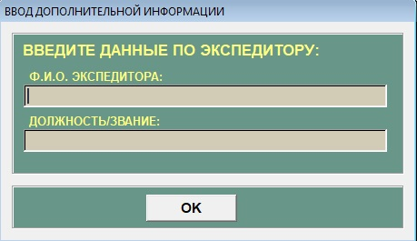
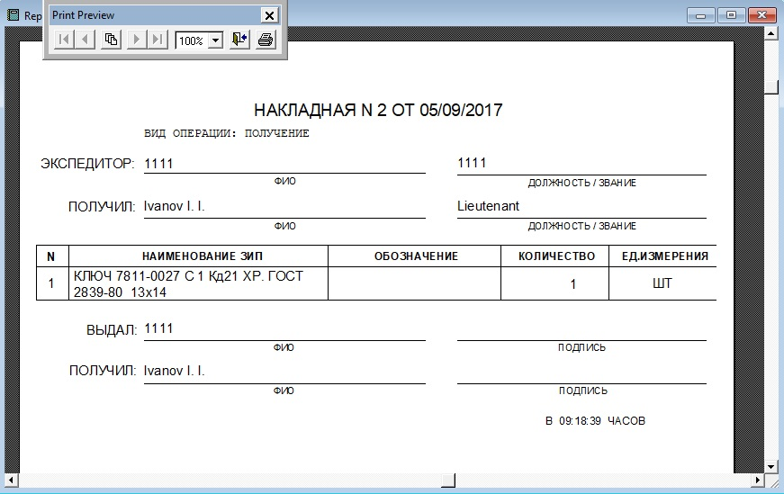
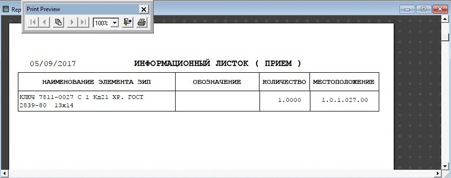

Sous-systeme "Admission"
В конец документа
В подсистеме "Прием" предоставлена возможность пополнения элементов ЗИП в машине. Внешний вид окна представлен на рисунке 1.

Рисунок 1 - Подсистема прием
Назначение кнопок:
-  - для перехода к последней надписи.
-  - для перехода к предыдущей надписи.
- - для перехода к следующей надписи.
- - для перехода к первой надписи.
- - увеличение количества элементов, в случае если принятая информация не верна.
-  - уменьшение количества элементов, в случае если принятая информация не верна.
-  - удаление элемента из перечня принятых элементов.
- "Накладная" - вывод накладной по принятым элементам (Становится доступной после приема).
- "Инф.листок" - вывод отчета по элементам показанным в перечне принятых (Становится доступной после приема).
- "Сохранить" - запись принятых элементов в базу данных.
- "Помощь" - позволяет открыть справку.
- "Выход" - осуществляет выход из окна подсистемы "Прием".
Поля:
- "Наименование" - Имя элемента.
- "Обозначение" - Обозначение элемента.
- "Местоположение" - местоположение элемента в формате с.с.т.щщщ.яяя. Только цифры и '.', смотри пункт 3.5(Подсистема "ЗИП").
- "Количество" - Количество полученных элементов.
Для пополнения количества элементов в системе АСПУ необходимо выполнить следующие действия:
-
Курсор(мигающая вертикальная линия) должен находиться в окне ввода, где будут отражаться считываемые терминалом штрих-коды, иначе коды элементов не
будут занесены в список полученных элементов.
-
Считывание терминалом:
- Подвести терминал к штрих-коду.
- Увидеть что элемент отобразился в поле наименование.
Ввод с клавиатуры:
- Ввести штрих код в поле.
- Нажать на клавиатуре клавишу "Enter"
- Увидеть что элемент отобразился в поле наименование.
-
Когда все элементы будут зарегистрированы, необходимо нажать кнопку "Сохранить" и информация будет сохранена.После этого откроется окно смотри рисунок 2.

Рисунок 2 - Экспедитор
-
Становится доступной клавиша "Накладная" для вывода на печать информации о принятых элементах, экспедиторе, принимающем, дате и времени произведенной операции смотри рисунок 3.

Рисунок 3 - Накладная
-
Для вывода на печать перечня принятых элементов, нужно нажать клавишу "Инф.листок", смотри рисунок 4.

Рисунок 4 - Инф.листок
- При необходимости повтора операции приема, необходимо выйти в главную форму, и войти в подсистему "Прием" повторно.